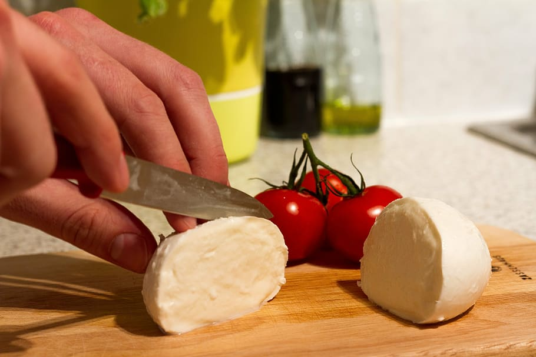

El Quincho
Provoletas
Recetas

Provoleta con vegetales
- Lavamos, cortamos y ponemos a hervir las chauchas.
- Mientras tanto, condimentamos la provoleta a gusto y la ponemos al horno.
- Una vez que las chauchas estén tiernitas, las colamos.
- En una sartén ponemos un chorrito de aceite, los tomates cherry, las chauchas y morrón cortado en tiritas.
- Salteamos. Antes de que estén cocidos, ponemos un chorrito de salsa de soja y pimienta.
- Listo para servir y comer!
Provoleta con palta y jamón
- Calentar bien la parrilla o plancha mantener la provoleta a temperatura ambiente.
- Cortar la palta al medio, quitar el carozo y pelar. Envolver cada mitad con el jamón y sostenerlo con palillo.
- Colocar al mismo tiempo la palta del lado del hueco y la provoleta. Cuando se dore el queso girarlo.
- Disponer la provoleta en una fuente con oliva y el orégano picado. Sobre esta las dos mitades de palta y retirar los palillos.
Provoleta Capresse
- Cortar una rodaja de tomate de 1 cm aproximadamente y cocinarla en un sartén con un poco de aceite de oliva.
- Cuando esté cocida, dar vuelta la rodaja y colocarle unas hojas de albahaca (en este caso utilicé albahaca morada).
- Retirar con cuidado e incorporar la provoleta. Una vez dorada, dar vuelta y colocar el tomate con la albahaca encima hasta que se dore la parte de abajo.
- Servir en una tabla de madera y acompañar con pan y el aperitivo que más les guste.